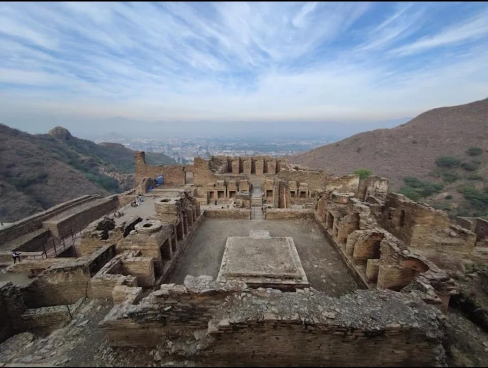
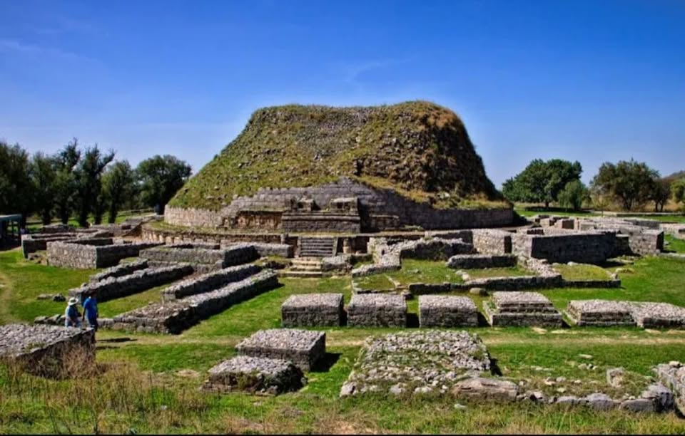
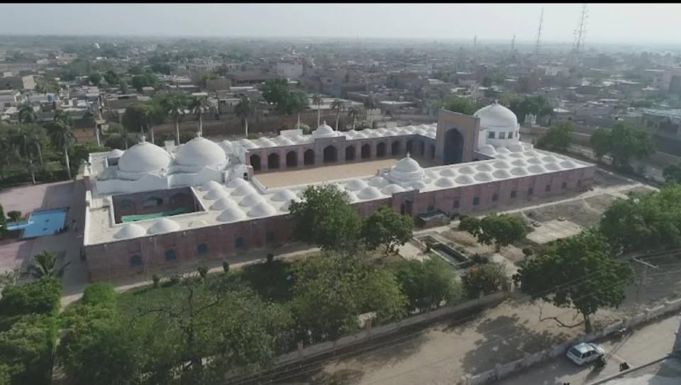

Ancient Civilizations & Archaeological Marvels
Mohenjo-daro

Located in Sindh,this UNESCO World Heritage site is one of the major settlements of the Indus Valley Civilization, dating back to around 2500 BCE.It features incredibly advanced bronze-age urban planning,baked-brick houses,public baths,and sophistical drainage systems
Taxila

An ancient Gandharan city and UNESCO World Heritage site located near Islamabad. It was a world-renowned historic center of Vedic and Buddhist learning that attracted scholars from across Asia. Key ruins include the Dharmarajika Stupa and the ancient city grid of Sirkap.
Takht-i-Bahi
Perched high on a ridge in Mardan, Khyber Pakhtunkhwa, this 1st-century CE Buddhist monastic complex is exceptionally well-preserved. Its dramatic hilltop setting features a court of stupas, monastic cells, and assembly halls.
Badshahi Mosque
.jpg)
Commissioned by Mughal Emperor Aurangzeb in 1673, this iconic red sandstone mosque features three white marble domes. It stands as an enduring symbol of Lahore and one of South Asia's largest historic mosques.
Shah Jahan Mosque

Located in Thatta, Sindh, this 17th-century mosque was gifted to the city by Emperor Shah Jahan. Uniquely for Mughal architecture, it relies heavily on intricate blue and white mosaic tilework and geometric brick layouts instead of red sandstone.
Makli Necropolis

One of the largest funerary spots in the world, housing roughly half a million tombs and graves across a 10-square-kilometer area. The tombs of kings, queens, and Sufi saints built between the 14th and 18th centuries feature spectacular, detailed stone carvings.
🏛️ Explore Historical Places of Pakistan
Click below to discover Wikipedia guides, archaeological research, and travel blogs.